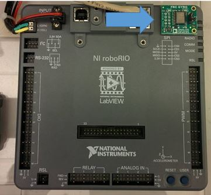
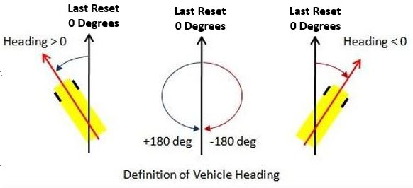
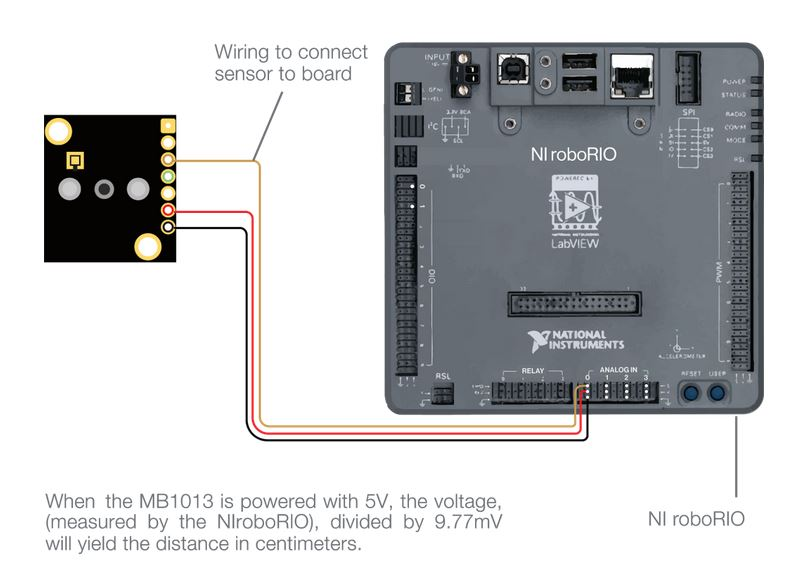
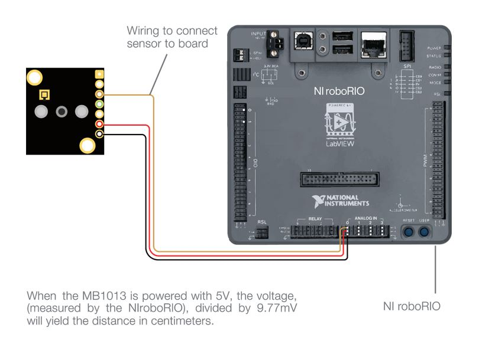
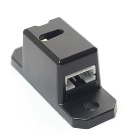
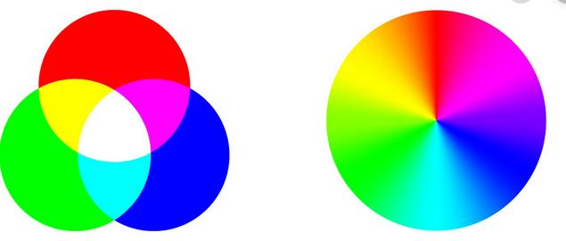

Overview
Sensors are used to help the Robot understand the world around it.
Using sensors, we can make robots react to the environment around them instead of depending on the driver to act.
Here is sumamry of a few sensors we may use in the competition.
| Type | Description |
|---|---|
| Gyros | Determines change in heading of the robot. |
| Encoders | Counts rotations of an axle. Typically used to count axle rotations to determine distance/velocity of the rotation |
| Limit Switches | Used for object detection. When in contact with an object, will send a different signal |
| Ultrasonics | Used to distance or object detection. Used only for short distances. |
| Color sensor | Used to determine color of an object. |
Gyros

Gyros measure heading of the robot to determine what direction it is going in.
0 Degrees is defined as the angle the robot was facing when the gyro was last reset.

Creating a Gyro object
Place under public class <SUBSYSTEM> extends Subsystem.
public static ADXRS450_Gyro GYRONAME = new ADXRS450_Gyro();
Usage
Function | Description | Example usage
---------|-------------|--------------
getAngle()| get angle from gyro | <examplename>.getAngle();
reset()| reset gyro heading to zero | <examplename>.reset();
Encoders
Encoders count the revolutions of an axle.
By understanding how many times an axle/wheel rotates, we can estimate the distance traveled.
AMT103-V - 5901's Drivetrain Encoder

5901 has used this encoder as a drivetrain encoder for years.
Creating a AMT103-V Encoder Object
place under public class <SUBSYSTEM> extends Subsystem
public static Encoder <encodername> = new Encoder(0, 1, false, Encoder.EncodingType.k1X) ;
Parameter Setting (to be placed in Constants.java
static double diameter = MEASURE_THIS; // inches
static double distancePerRev = diameter * Math.PI;
static int ticksPerRev = 2048; // what you set them to , before was 2048
leftEncoder = new Encoder(0, 1, false, Encoder.EncodingType.k1X);
leftEncoder.setDistancePerPulse(distancePerRev / ticksPerRev);
leftEncoder.setReverseDirection(true); //Depends on if your mechanism runs counterclockwise or clockwise
leftEncoder.setMaxPeriod(.1);
leftEncoder.setMinRate(10);
leftEncoder.setSamplesToAverage(7);
CTRE Magnetic Encoder - 5901's Mechanism Encoder
Creating on object
None! CTRE encoders are wired directly into a TalonSRX, which serves as the object
Parameter Setting
TALONNAME.configSelectedFeedbackSensor(FeedbackDevice.CTRE_MagEncoder_Absolute, 0,0);
TALONNAME.configSelectedFeedbackSensor(FeedbackDevice.CTRE_MagEncoder_Relative, 0,0);
//Set current position to 0
int sensorPos=0;
elevatorEbony1.setSelectedSensorPosition(sensorPos, 0,10);
elevatorEbony1.configOpenloopRamp(1.5,0);
elevatorIvory7.configOpenloopRamp(1.5,0);
elevatorIvory7.set(com.ctre.phoenix.motorcontrol.ControlMode.Follower, 1);
elevatorEbony1.configForwardSoftLimitThreshold(36000,0);
elevatorEbony1.configReverseSoftLimitThreshold(0,0);
elevatorEbony1.configForwardSoftLimitEnable(true, 0);
elevatorEbony1.configReverseSoftLimitEnable(true, 0);
elevatorEbony1.configNominalOutputForward(0, 0);
elevatorEbony1.configNominalOutputReverse(0, 0);
elevatorIvory7.configNominalOutputForward(0, 0);
elevatorIvory7.configNominalOutputReverse(0, 0);
elevatorEbony1.configPeakOutputForward(.5,0);
elevatorEbony1.configPeakOutputReverse(-.5,0);
elevatorIvory7.configPeakOutputForward(.5,0);
elevatorIvory7.configPeakOutputReverse(-.5,0);
Limit Switch
Creating a Limit Switch Object
public static DigitalInput <LimitSwitchName> = new Digital Input (X)
where X relates to the digital I/O port on the RoboRio.
Ultrasonics
How do ultrasonics work?
 

Creating a ultrasonic object
private static final int kUltrasonicPort = 0; //
private static final double kValueToInches = 0.125; //Converts returned voltage to inches
private final AnalogInput m_ultrasonic = new AnalogInput(kUltrasonicPort);
Usage
m_ultrasonic.getValue() * kValueToInches; // Converts signal to inches
Color Sensor

Creating a color sensor object
private final I2C.Port i2cPort = i2C.Port.kOnboard;
private final ColorSensorV3 m_colorSensor = new ColorSensorV3(i2cPort);
private final ColorMatch m_colorMatcher = new ColorMatch();
Defining color calibrations
Colors are defined by 3 numbers that define their Red/Green/Blue values (RGB).
Use the following website to determine initial calibrations: RGB Calculator

public static final Color kBlueTarget = ColorMatch.makeColor(0.136, 0.412, 0.450);
public static final Color kGreenTarget = ColorMatch.makeColor(0.196, 0.557, 0.246);
public static final Color kRedTarget = ColorMatch.makeColor(0.475, 0.371, 0.153);
public static final Color kYellowTarget = ColorMatch.makeColor(0.293, 0.561, 0.144);
Usage
Adds the colors that the robot should matched based on the above colors
m_colorMatcher.addColorMatch(kBlueTarget);
m_colorMatcher.addColorMatch(kGreenTarget);
m_colorMatcher.addColorMatch(kRedTarget);
m_colorMatcher.addColorMatch(kYellowTarget);
Color detectedColor = m_colorSensor.getColor();
String colorString;
ColorMatchResult match = m_colorMatcher.matchClosestColor(detectedColor);
if (match.color == kBlueTarget) {
colorString = "Blue";
} else if (match.color == kRedTarget) {
colorString = "Red";
} else if (match.color == kGreenTarget) {
colorString = "Green";
} else if (match.color == kYellowTarget) {
colorString = "Yellow";
} else {
colorString = "Unknown";
}
SmartDashboard.putNumber("Red", detectedColor.red);
SmartDashboard.putNumber("Green", detectedColor.green);
SmartDashboard.putNumber("Blue", detectedColor.blue);
SmartDashboard.putNumber("Confidence", match.confidence);
SmartDashboard.putString("Detected Color", colorString);